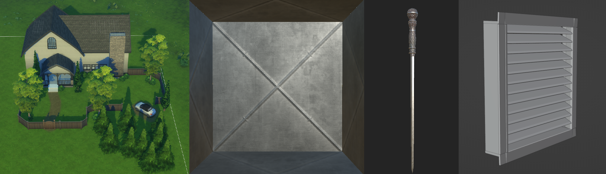
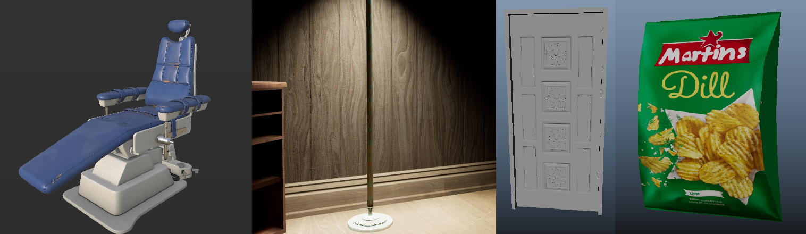
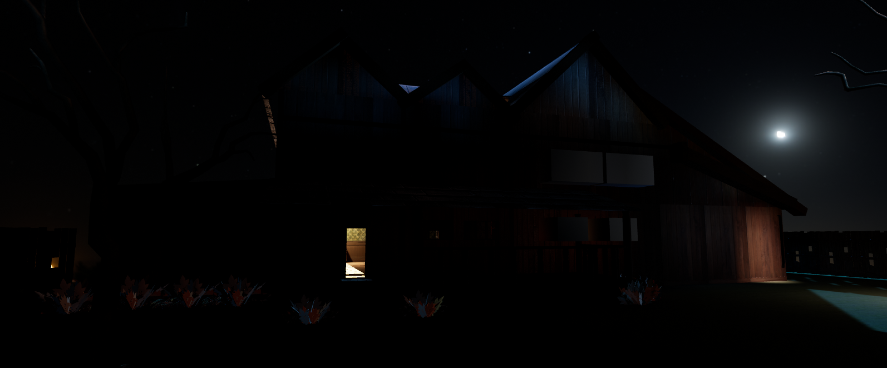

Monday, May 1st
National Holiday!
Tuesday, May 2nd
Tuesday, the squad returned to school after the elongated weekend. Seeing as Emma, who was meant to implement sound, remained absent due to sickness, it was decided that I would start working with sounds in engine. This is what I spent most of the day doing. We also held a playtest at 16 where two of our artists played through the game.
Above, in order from left to right: a blockout of the house exterior by Felicia, a ventilation drum by Lucas, the antagonist's dagger by Wille and a ventilation grate, also by Lucas.
Wednesday, May 3rd
Home with a migrane.
Thursday, May 4th
Back in business! I spent the Thursday working with sounds in the engine and trying to get them sounding lifelike.
Dentist's chair by Loke, new textures and lighting by Lucas, an entrance door and a bag of crisps by Wille.
Friday, May 5th
On the fifth, I spent some time getting more background sounds into the level, and also made some adjustments to the UI which significantly increased visibility and clarity. In the afternoon, I hosted a playtesting session where we found a number of bugs and issues which will be worked out during the following week.
